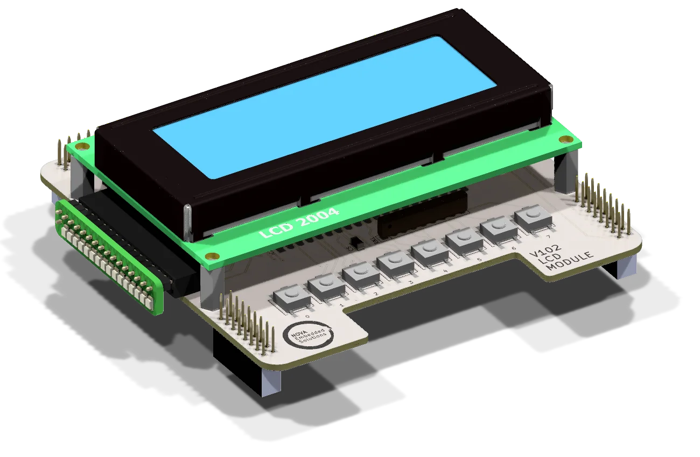
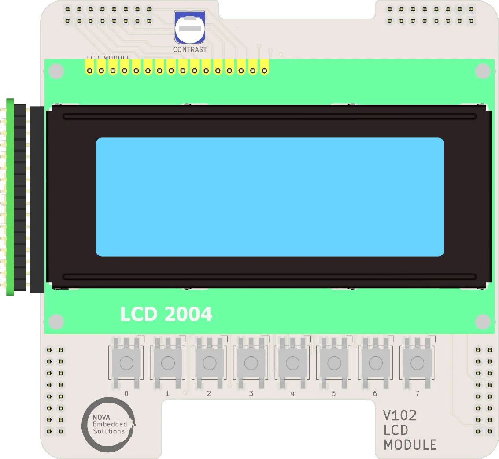
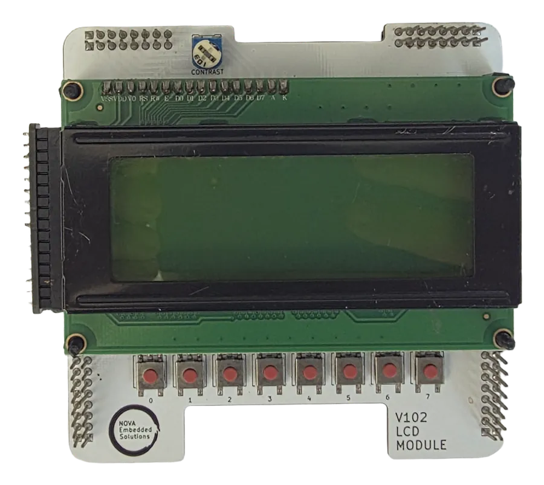
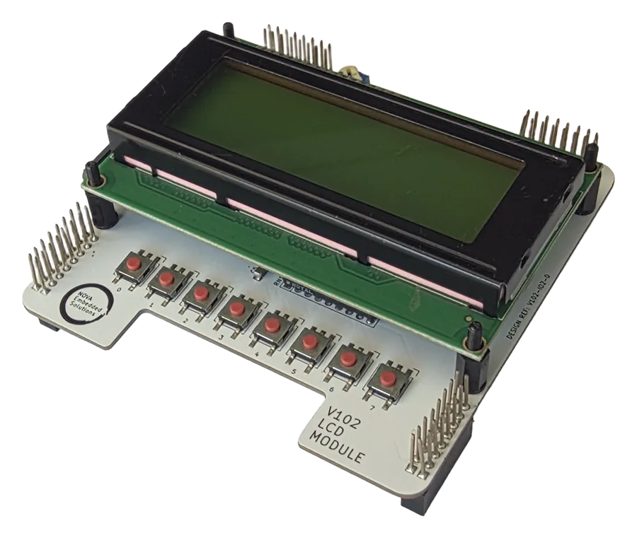
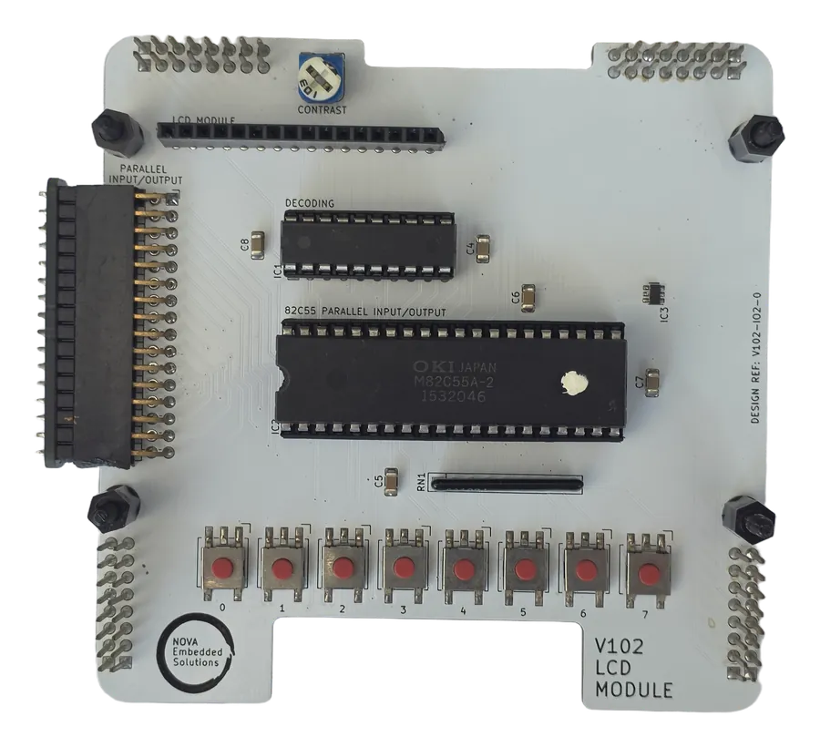

V102-IO2-0
I/O 2 with LCD
A front panel for the top of the stack: four lines of text, eight buttons, two spare ports.
- Display
- 20 × 4 HD44780 at 30h
- Ports
- 82C55A at 24h
- Buttons
- Eight
- Position
- Top of the stack
- Glue
- GAL16V8

What's on the board

How it works
- GAL16V8 decodes the 82C55A PPI at 24h–27h and the LCD at 30h/31h (RS = A0)
- Ports A and B on J5 for user I/O; eight buttons on port C (pressed = 1)
- 20 × 4 HD44780 LCD on the data bus in 8-bit mode, E from the PLD
- Uses only A0–A7, D0–D7, IORQ, RD, WR, RST; the LCD makes it the top of the stack
What it took
- Slow HD44780 driven straight from the CPU bus with no extra logic
- Works on Z80 and 6502 through the shared I/O cycle
- A compact front panel: display and buttons in one board
Next revision
- Qualify LCD E with /RD or /WR: it answers interrupt-acknowledge cycles
- LCD R/W timing from WRB on the Z80
- Backlight resistor and switch; move the GAL out from under the LCD
- Optional button interrupt
Schematic
Tap to open it full screen, then pinch, scroll or drag to explore. It stays sharp at any zoom.
Photos and files



Downloads
Read the PLD source, V102-IO2-00
Name V102-IO2-0 ; PartNo 00 ; Date 5/7/23 ; Revision 0 ; Designer Nigel ; Company xxx ; Assembly None ; Location ; Device g16v8a ; /* *************** INPUT PINS *********************/ PIN 1 = A0 ; PIN 2 = A1 ; PIN 3 = A2 ; PIN 4 = A3 ; PIN 5 = A4 ; PIN 6 = A5 ; PIN 7 = A6 ; PIN 8 = A7 ; PIN 9 = IORQB ; FIELD ADDR = [A7..A0] ; /* *************** OUTPUT PINS *********************/ PIN 15 = 8255CS ; PIN 16 = LCD ; /* *************** LOGIC FORMULA *********************/ LCD = (ADDR:[30..31] & !IORQB) ; // active hi !8255CS = (ADDR:[24..27] & !IORQB) ; // 4 addresses after the lcd a,b,c,ctrl